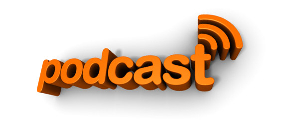

Básicamente es como se llama a compartir los archivos de audio
El tema es que puedes compartir el archivo de sonido que quieras ya sea
comentando algo, música, dando lecciones sobre un idioma, cualquier tipo
de audio.

¿CÓMO SE HACE?
Para hacer tu archivo de audio cualquier editor de audio es válido un ejemplo el Audacity, se tiene que guardar con formato mp3 , para compartir el archivo hay que subirlo a un servidor conviene usar uno que pueda alojar podcast como por ejemplo
Live365 y
Podomatic
Referente a otras plataformas Live365 cuenta con un mejor diseño de la pagina
Podomatic la única pega es que te tienes que registrar por lo demás es una muy buena plataforma en la que además podemos crear nuestros propios podcast.
Aquí un video para más información